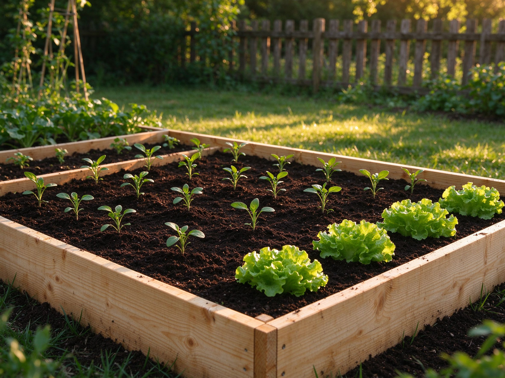

Raised Garden Beds 101: Build, Fill & Grow Your First Bed
If your soil is rocky, clay-heavy, or just plain bad, a raised bed is the fastest way to grow a productive garden. Here's exactly how to build, fill, and maintain one — without over-spending or over-engineering it.
Why Raised Beds Are Worth It
Raised beds solve the three problems that stop most first-time gardeners: poor soil, back-breaking weeding, and poor drainage. You control exactly what goes into the soil, you never step on it (so it stays loose and airy), and the edges keep weeds and grass out. In cold climates, the soil also warms up faster in spring, which means you can plant earlier.
Choosing Wood: What's Safe and What Lasts
Cedar and larch are the gold standard — naturally rot-resistant and safe for growing food. Pine is cheaper and fine if you line the inside, but it breaks down in 3-5 years. Avoid old railroad ties and pressure-treated wood made before 2004, which may leach heavy metals. Modern ACQ-treated lumber is generally considered safe, but if you're growing root vegetables like carrots, lining the bed with plastic or landscape fabric gives extra peace of mind.
Size and Placement: Get These Right First
Keep your bed no wider than 4 feet (1.2 m) if you'll reach it from both sides, or 3 feet if it sits against a wall. Length is flexible. Height matters too: 6-8 inches works for most vegetables, but 12-16 inches is better if the ground underneath is very hard or you want less bending. Place the bed where it gets at least 6-8 hours of direct sun, with the long side facing south for even light.
How to Fill a Raised Bed Without Spending a Fortune
Filling a deep bed with bagged soil gets expensive fast. The budget-friendly method is layering: put coarse material (logs, branches, woody prunings) in the bottom third to hold moisture and add organic matter over years, then fill the top two-thirds with a mix of quality topsoil and compost. This is the classic "hügel-style" fill. Avoid filling a bed entirely with pure compost — it shrinks, drains too fast, and can burn young roots with too much nitrogen. Aim for roughly 60-70% soil, 30-40% compost in the top layer.
Planting: The Best Crops for Raised Beds
Almost anything grows well, but raised beds really shine for root vegetables (carrots, beets, radishes — loose soil means straight, perfect roots), salad greens that you can succession-sow for months, and intensive plantings like onions and garlic. Tall crops like tomatoes and squash still need support, but they love the warm, rich soil. See our best vegetables for beginners guide for what to start with.
Watering: The One Habit That Decides Everything
Raised beds drain faster than in-ground beds, so they need more frequent watering in summer — every 1-2 days in hot weather. Mulch the surface with straw or shredded leaves to cut evaporation by up to 50%. A simple drip line or soaker hose on a timer makes it effortless. Water in the morning, at the base, and check the soil an inch down before watering again.
Maintenance and Refreshing the Soil
Each spring, top up the bed with 1-2 inches of fresh compost — the soil level drops as organic matter breaks down. Rotate your crop families each year to prevent disease buildup, and at season's end, leave roots in the ground or add them to the compost pile. A bed refreshed this way stays productive for a decade.
Beginner Mistakes to Avoid
The three most common ones: building the bed too wide to reach the middle, filling it with bagged soil alone (it compacts and stays dry), and overwatering because the sides drain quickly. Also, don't put cardboard in the bottom expecting it to smother grass — a thin layer rots fast; use a double layer and expect some grass to push through eventually.
Ready to start planting? Check our step-by-step vegetable garden plan or learn how to build rich soil for whatever you grow.